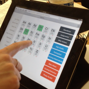
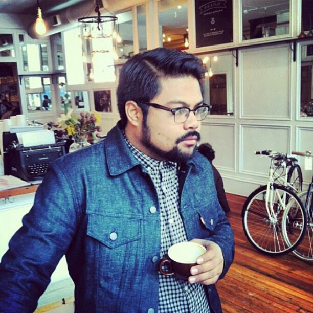
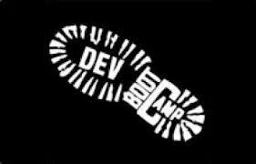
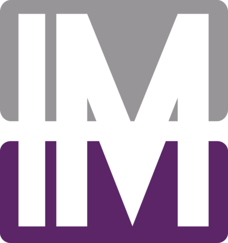

We can make a difference ... one computer at a time.
Please use #swotbot when sharing :)
Our Goal
Our goal is to change the face of education in the United States and create an environment where students, regardless of background have the same opportunities to go to college. We believe that SWOT Bot combined with programming courses can give students in underfunded, underprivileged communities the help they need to attend college.
$35,000 – Computer lab
On August 26, 2013, just three days after graduating from Dev Bootcamp, Rachel was back in the classroom. Aside from her regular duties of teaching subjects like History and English, Rachel decided to share her love and knowledge of programming with her students… Without computers!
Computers are cheap. There is absolutely no reason that in one of the wealthiest countries in the world, our schools do not have adequate supplies to teach our children. We aim to solve this, one school at a time.
The first $35,000 raised will supply enough workstations for 30 students. All additional money raised will go directly to supporting the SWOT Bot (the student behavior tracking system we created while attending Dev Bootcamp), its expansion and our goal of sharing this tool with teachers across the United States.
Thank you for your support.
About SWOT
Founded by Rachel Warbelow and Ben Salkowe, SWOT is the first high-achieving, college-prep pathway for middle school students in East Las Vegas. Driven by high expectations, rigorous assessments, expanded instruction, and one-of-a-kind field lessons, our 120 students are redefining the possibilities for public education in Nevada.
After 4 frustrating years of tracking of student behavior, grades, and attendance on paper and inserting it into spreadsheets, Rachel took matters into her own hands and decided to attend Dev Bootcamp during her summer break in 2013.
At Dev Bootcamp, Rachel learned how build full-stack web applications using Ruby, Rails, Javascript, jQuery, and many other frameworks/languages. After seven and a half intense weeks of training, Rachel teamed up with fellow students Allen Dayag, Jake Myers and Eric Allen to create the SWOT Bot.
In eight days, the SWOT Bot team created a fully functional student management system that replaces the 20-hour process of tabulating student data with a sleek iPad interface that allows teachers to track student progress in real-time. SWOT Bot also enables students and their guardians to track their performance via the web, email or SMS text.
Additional features include:
- Internal messaging system for parents, teachers and students to communicate with one another
- Weighted gradebook
- Attendace
- Detention
- Student goals
- Daily quotes and inspirations to help students stay focused on attending college
- Email distribution of weekly SWOT reports
- SMS text broadcasting for teachers to notify groups of parents
Our goal is to change the face of education in the United States and create an environment where students, regardless of background have the same opportunities to go to college.
Who We Are
The SWOT Bot team is made up of individuals but collectively, we believe that every child in the United States should have access to a computer and the opportunity to learn how to program.
-
Rachel Warbelow
Rachel teaches 7th and 8th grade for the SWOT Team in East Las Vegas and is the heartbeat of the SWOT Bot team. Rachel’s passion for learning, teaching, and technology coupled with her heart for others is the reason SWOT Bot exists.


-
Jake Myers
Jake is a web developer in Boulder, CO. As a father of two, Jake has a particular interest in working on SWOT Bot to make significant changes in our education system. Just 3 weeks after completing Dev Bootcamp, Jake took a full-time position with Mondo Robot where he continues to make beautiful and meaningful things.
-
Allen Dayag
A Chicago native, Allen is the best-dressed man in the room, a coffee connoisseur and everyone’s favorite person. By day Allen is a full-stack web developer and brings the house down regularly with his karaoke skills by night. If you ever run into him on the street, simply ask him, “Did you commit, Bro?”
-
Eric Allen
Eric is a web developer from Denver, CO. A die-hard Denver Broncos fan and a geek at heart, Eric loves programming and is a true SWOT Bot evangelist. Eric is all about scalability and wants to see SWOT Bot in every school in the United States.
FAQ
Is there a minimum amount I can donate?
No. All donations make a difference. "A waterfall starts with a single drop of water."
If I donate, what will my money go towards?
The first $35,000 will go to funding a computer lab for the students of the SWOT Program. We believe every student, regardless of background and socioeconomic status can learn to code. As Steve Jobs said, "I think everybody in this country should learn how to program a computer, should learn a computer language, because it teaches you how to think.”
Any additional funding will go directly towards scaling the SWOT Bot and paying for the daily cost of running it. Text messages, email and servers cost money. Currently, the SWOT Team has been paying for all these services out of pocket.
100% of all donations will go directly to funding the computer lab and to support the application and its development. SWOTBot.org does not employ anyone and all developers volunteer their time.
What is the SWOT Team?
The SWOT Team, or Scholars Working OverTime, is the first college-prep, extended-day program for middle school students in East Las Vegas. Driven by high expectations, rigorous assessments, expanded instruction, and one-of-a-kind field lessons, our 120 students are redefining the possibilities for public education in Nevada. We will get every student on our team to and through the college of their dreams. For more info visit theswotteam.org
What is the SWOT Bot?
The SWOT Bot is a web-based application that allows teachers to track student attendance, behavior (both positive and negative), assignments and grades in real time via an iPad. The SWOT Bot provides feedback to teachers, students and parents in real time over the web, email and SMS text messaging.
Can I use the SWOT Bot for my classroom?
Currently, we are still testing the SWOT Bot and adding functionality. Though our system is live and being used, we currently do not have the funding to scale the application and offer it to other schools. If you are interested in donating to help open source the SWOT Bot so that we can provide it free of charge to teachers everywhere, please contact us at info@swotbot.org.
Contact Us
If you have any questions or are interested in becoming more involved with the SWOT Bot team, please contact us at info@swotbot.org
Thank you
-
Dev Bootcamp
A giant hug to Dev Bootcamp for the inspiration, education, and personal growth that have empowered us to build beautiful, meaningful things.
-
Innovative Motion
Thank you to Innovative Motion for consulting on our video. We couldn't have done it without you.